Integrations and Configurations Guide
Introduction
This user guide provides a comprehensive overview of the Integrations feature in ELITEA and how to leverage these integrations through Configurations within Agent toolkits. These powerful functionalities enable seamless connections with external platforms, streamlining workflows and enhancing collaboration across different tools.
The ability to integrate with external services and manage their configurations within ELITEA offers significant benefits, including:
- Enhanced Workflow Efficiency: Connect ELITEA with your existing tools like Jira, Confluence, GitHub, and TestRail to automate tasks, share information, and reduce manual data entry.
- Centralized Management: Manage connections to various external services from a single location within ELITEA, simplifying administration and improving visibility.
- Customized Authentication: Configure authentication settings for external tools at different levels (personal or project-specific) to meet various security and access requirements.
- Flexibility and Reusability: Create reusable integration configurations that can be easily applied to multiple Agent toolkits, saving time and effort.
This guide will detail the process of setting up Integrations and utilizing Configurations within Agent toolkits, along with best practices and practical use cases to help you effectively leverage these features.
Important Note:
In ELITEA, your work is organized within three distinct types of spaces:
- Private Workspace: This is your personal area within ELITEA. You have exclusive access to all the content you create and manage here. Think of it as your individual sandbox where you can experiment and build your AI solutions. This includes your personal Chats, Agents, Prompts, Datasources, Collections and Artifacts.
- Team Project: These are collaborative spaces where multiple users are added as team members. Within a Team project, all members have access to the project's content, fostering collaboration and shared development. This shared content includes Chats, Agents, Prompts, Datasources, Collections and Artifacts that belong to that specific project.
- Public Project: This space allows you to engage with the wider ELITEA community and explore content shared by other users. This shared content includes Chats, Agents, Prompts, Datasources, and Collections.
Understanding the distinction between your Private Workspace, where you have exclusive access to your content, and Team Projects, which are collaborative spaces where team members share access to project resources, is crucial for effectively managing Integrations and Configurations within ELITEA.
Integration Feature: Connecting ELITEA with External Platforms
The Integrations menu in ELITEA serves as a central hub for establishing connections with external platforms. By configuring integrations, you make these external services available for use within your Agent toolkits.
Key Aspects of the Integration Feature:
- Centralized Connection Management: The Integrations menu provides a single point of control for managing connections to various external services.
- Supported Platforms: ELITEA currently supports integrations with Jira, Confluence, GitHub, and TestRail, with plans to add more services in future releases.
- Reusable Configurations: Once an integration is configured, it can be reused across multiple Agent toolkits within the same project or your Private workspace.
- Private and Project Level Integrations: You can create integrations within your Private workspace for personal use or within Team projects for shared access among project members.
- Secure Authentication: ELITEA offers various secure authentication methods for connecting to external platforms, including API Keys, Tokens, Passwords, and Private Keys, with the option to store sensitive credentials securely using Secrets.
Accessing the Integrations Menu:
- Log in to ELITEA.
- Navigate to either your Private workspace or the specific Team project where you want to configure the integration.
- Click on the Your Avatar icon located at the top right corner of the page to open the Settings sidebar menu.
- Click the Integrations to navigate to that section.
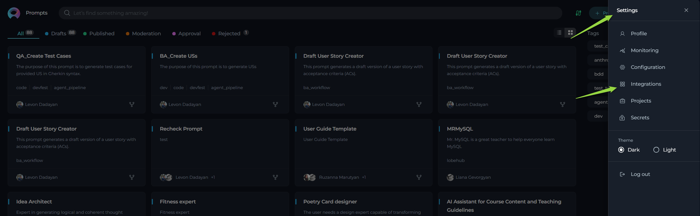
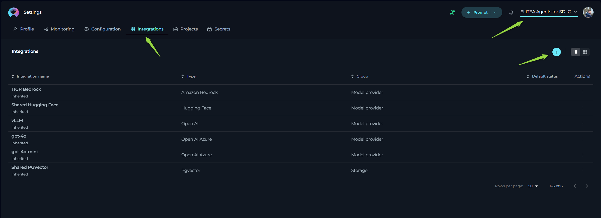
Setting up an Integration:
- In the Integrations menu, click the + icon to create a new integration.
- A pop-up window will appear, prompting you to Select Integration Type. Choose the service you want to integrate with (e.g., Confluence, GitHub, Jira, TestRail).
- You will be presented with a configuration form specific to the selected integration type. Follow the detailed steps below for each service.
- Configure the Intergation parameters.
- Click the Save button to finalize the integration setup.
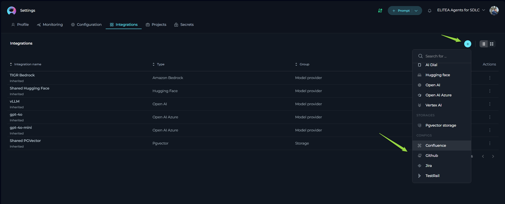
After saving, the newly created integration will be added to the Integrations table, making it available for selection and reuse in the Configurations section of your Agent toolkits. You can manage your saved integrations directly from the Integrations table. In the Actions column, click on the ellipsis icon (...) next to a specific integration, you will reveal options to Edit the integration details, Set as Default to make it the default one for that Integration type, or Delete the integration if it's no longer needed.
Confluence Integration Setup
To enable connection with your Confluence instance:
- Initiate New Integration: Click the
+icon in the Integrations menu and select Confluence. - Enter Integration Details:
- Name: Provide a descriptive name for this integration (e.g., "Confluence - KB Name").
- URL: Enter the base URL of your Confluence instance (e.g.,
https://kb.epam.com/). - Authentication Options: Choose your preferred authentication method:
- API Key:
- Select API Key.
- Enter your Confluence API key in the Password field or select a pre-configured Secret from the dropdown.
- Enter the associated Username for the API key.
- Token:
- Select Token.
- Enter your Confluence API token in the Password field or select a pre-configured Secret from the dropdown.
- Username:
- Select Username.
- Enter your Confluence Username.
- Enter your Confluence Password or select a pre-configured Secret from the dropdown.
- API Key:
- Hosting Option: Select the appropriate hosting type:
- Cloud: For Confluence instances hosted on Atlassian's cloud.
- Server: For self-hosted or enterprise Confluence instances. Important Note: For connecting to Epam's Confluence, select Server.
- Set as Default: Optionally, check this box to make this integration the default Confluence connection for the Private workspace or Team project.
- Save the Integration: Click the Save button.
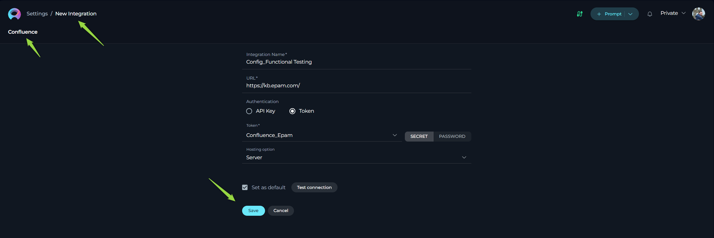
GitHub Integration Setup
To connect with your GitHub repositories:
- Initiate New Integration: Click the
+icon in the Integrations menu and select GitHub. - Enter Integration Details:
- Name: Provide a descriptive name for this integration (e.g., "GitHub - Repo Name").
- Authentication Options: Choose your preferred authentication method:
- Private Key:
- Select Private Key.
- Enter the App ID for your GitHub App.
- Enter the Private Key in the Password field or select a pre-configured Secret.
- Token:
- Select Token.
- Enter your GitHub Personal Access Token in the Password field or select a pre-configured Secret.
- Password:
- Select Password.
- Enter your GitHub Username.
- Enter your GitHub account Password in the Password field or select a pre-configured Secret.
- Anonymous: Select Anonymous if no authentication is required for the specific GitHub repository you intend to access (typically for public repositories).
- Private Key:
- Set as Default: Optionally, check this box to make this integration the default GitHub connection for the Private workspace or Team project.
- Save the Integration: Click the Save button.
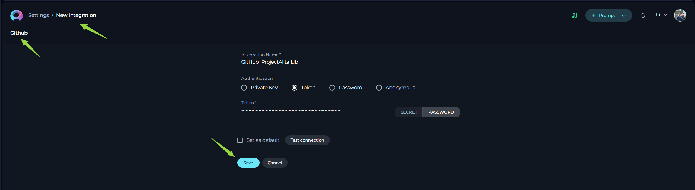
Jira Integration Setup
To enable connection with your Jira instance:
- Initiate New Integration: Click the
+icon in the Integrations menu and select Jira. - Enter Integration Details:
- Name: Provide a descriptive name for this integration (e.g., "Jira - Project Name").
- URL: Enter the base URL of your Jira instance (e.g.,
https://jiraeu.epam.com/). - Authentication Options: Choose your preferred authentication method:
- API Key:
- Select API Key.
- Enter your Jira API key in the Password field or select a pre-configured Secret.
- Enter the associated Username for the API key.
- Token:
- Select Token.
- Enter your Jira API token in the Password field or select a pre-configured Secret.
- Username:
- Select Username.
- Enter your Jira Username.
- Enter your Jira Password or select a pre-configured Secret.
- API Key:
- Hosting Option: Select the appropriate hosting type:
- Cloud: For Jira instances hosted on Atlassian's cloud.
- Server: For self-hosted or enterprise Jira instances. Important Note: For connecting to Epam's Jira, select Server.
- Set as Default: Optionally, check this box to make this integration the default Jira connection for the Private workspace or Team project.
- Save the Integration: Click the Save button.
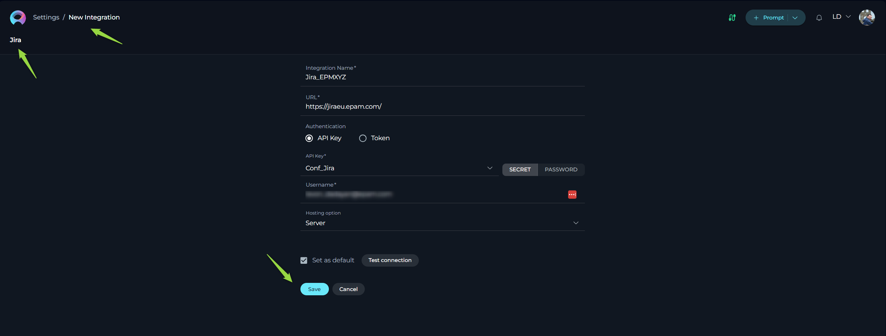
TestRail Integration Setup
To connect with your TestRail instance:
- Initiate New Integration: Click the
+icon in the Integrations menu and select TestRail. - Enter Integration Details:
- Name: Provide a descriptive name for this integration (e.g., "TestRail - Project Name").
- URL: Enter the base URL of your TestRail instance (e.g.,
https://testrail.epam.com/). - Email: Enter the email address associated with your TestRail account.
- Authentication Options: Choose your preferred authentication method:
- Password: Enter your TestRail account Password in the Password field or select a pre-configured Secret.
- Set as Default: Optionally, check this box to make this integration the default TestRail connection for the Private workspace or Team project.
- Save the Integration: Click the Save button.
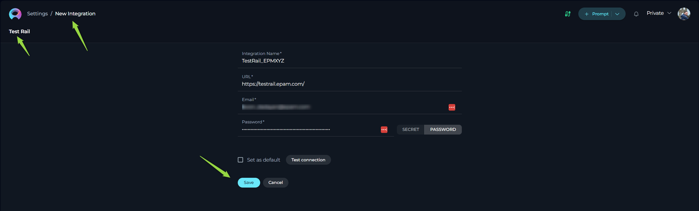
Important Considerations for Integrations
When setting up integrations in ELITEA, it's important to understand the following constraints and best practices:
-
Uniqueness per Integration Type:
- Jira, Confluence, and TestRail: Within your Private workspace or a Team project, you can create multiple integrations for Jira, Confluence, and TestRail. The uniqueness of these integrations is determined by the URL of the respective service. This means you can connect to different Jira instances, Confluence spaces, or TestRail accounts by creating separate integrations for each unique URL.
- GitHub: In contrast to Jira, Confluence, and TestRail, you can create only one GitHub integration within your Private workspace or a Team project. This single integration will serve as the connection point for all your GitHub interactions within that space.
-
Authentication Verification: Always double-check the authentication details you provide for each integration. Incorrect credentials will prevent ELITEA from successfully connecting to the external service. Ensure that the API keys, tokens, passwords, or private keys you enter are accurate and have the necessary permissions to access the desired resources on the external platform. Verifying the authentication setup is crucial for ensuring your integrations (and the configurations that use them) function correctly.
Configurations: Applying Integrations to Agent Toolkits
Configurations provide the mechanism to utilize the integrations you've set up within your Agent toolkits. When configuring a toolkit for Jira, Confluence, GitHub, or TestRail within an Agent, you have the option to select a pre-configured integration, eliminating the need to enter authentication details directly into the toolkit settings.
Configuration Options:
When configuring a toolkit, you will typically find a dropdown menu or a selection field related to "Configuration" or "Integration." This section offers three primary options:
- Create manual configuration: This option allows you to enter all the necessary connection details (URL, authentication credentials) directly within the toolkit settings. This is useful for one-off connections or when you don't want to create a reusable integration.
- Create private configuration: Selecting this option will create a new integration configuration specifically for this toolkit. The entered details will be used for this toolkit and will also be saved as a reusable integration in your Private workspace's Integrations page. This allows you to reuse this configuration in other toolkits within your Private workspace or Team projects.
- Create project configuration: Similar to the private configuration, this option creates a new integration configuration for the toolkit. The details will be used for this toolkit and will also be saved as a reusable integration in the current Team project's Integrations page, making it available for other agents and toolkits within that project.
- Select existing integration: This option allows you to choose from the list of integrations that have already been configured in your Private workspace or the current Team project's Integrations page. Selecting an existing integration automatically populates the toolkit's connection details, simplifying the setup process.
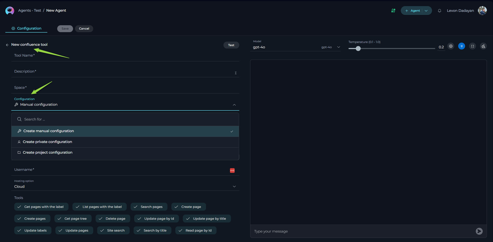
Create manual configuration
- Click the + Agent button located at the top right corner or open already created Agent.
- Click the + icon or open already created toolkit under TOOLS section.
- Select the desired tool (Confluence, Jira, GitHub, TestRail) from the dropdown list. The New tool configuration section is opened.
- Select the Manual configuration under the Configuration option.
- Depending on the selected toolkit fill all required fields and options.
- Click the Save button to apply changes.
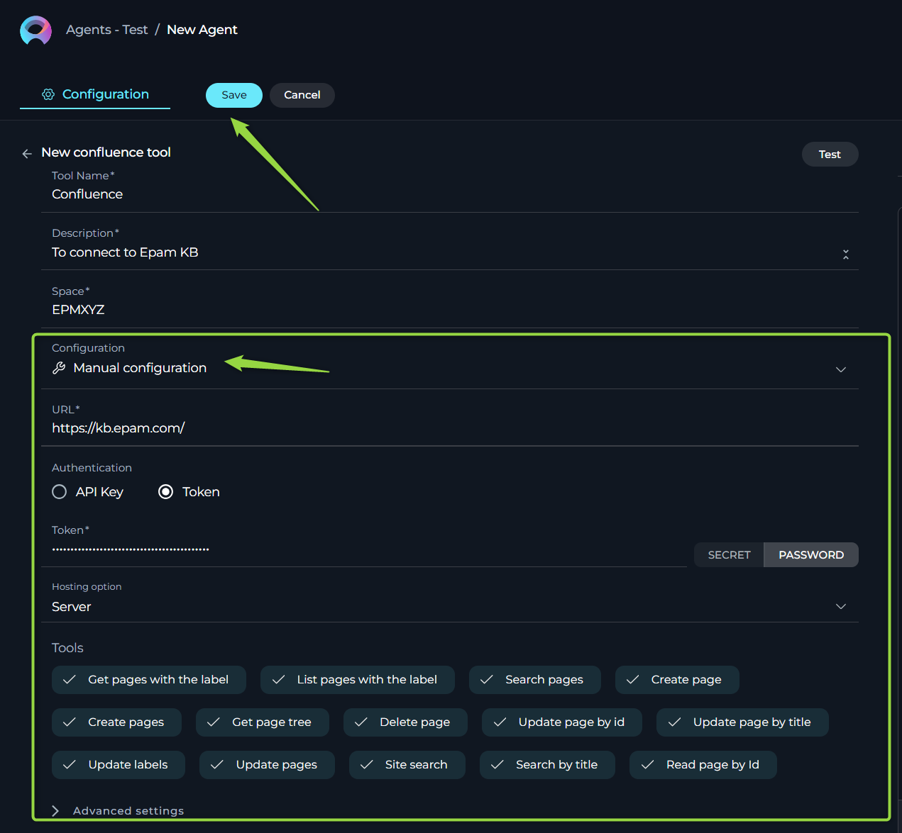
Create private configuration
- Click the + Agent button located at the top right corner or open already created Agent.
- Click the + icon or open already created toolkit under TOOLS section.
- Select the desired tool (Confluence, Jira, GitHub, TestRail) from the dropdown list. The New tool configuration section is opened.
- Select the Create private configuration under the Configuration option.
- Provide the Configuration Name.
- Depending on the selected toolkit fill all required fields and options.
- Click the Save configuration button to save the changes and add this configuration as reusable integration in your Private workspace's Integrations page.
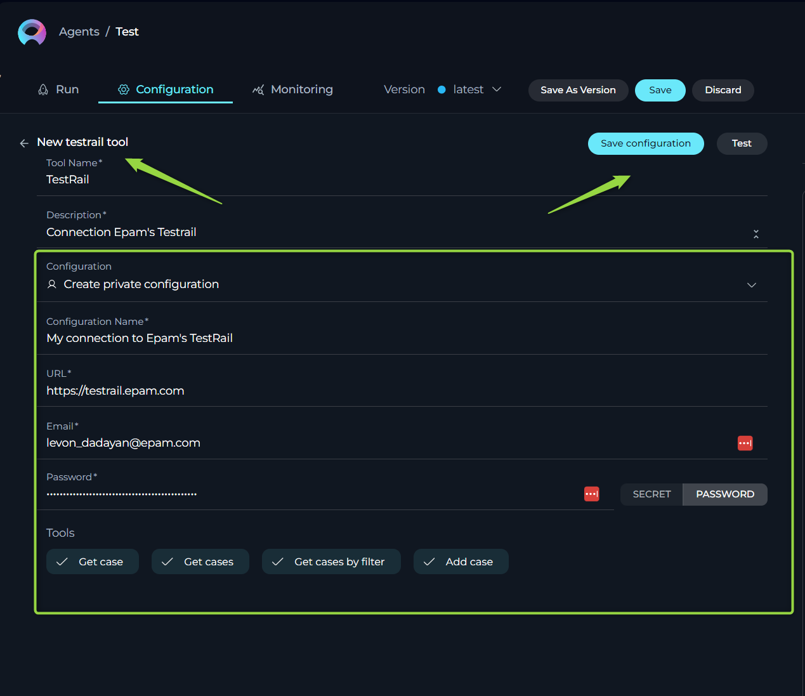
Create project configuration
- Click the + Agent button located at the top right corner or open already created Agent.
- Click the + icon or open already created toolkit under TOOLS section.
- Select the desired tool (Confluence, Jira, GitHub, TestRail) from the dropdown list. The New tool configuration section is opened.
- Select the Create project configuration under the Configuration option.
- Provide the Configuration Name.
- Depending on the selected toolkit fill all required fields and options.
- Click the Save configuration button to save the changes and add this configuration as reusable integration in your Team project's Integrations page.
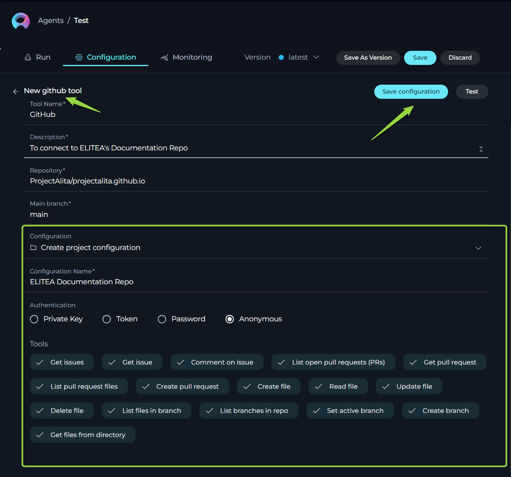
Configurations: Selecting existing Integrations
Once you have configured integrations in your Private workspace or within a Team project, these integrations become available for selection when configuring toolkits in your Agents. This allows you to easily reuse established connections to external platforms.
When adding or editing a Jira, Confluence, GitHub, or TestRail toolkit in an Agent, you will find a Configuration dropdown list. This list displays all the available integrations of the corresponding type that you can use for that specific toolkit.
Identifying Integration Scope:
To help you distinguish between integrations configured in your Private workspace and those configured within the current Team project, ELITEA uses distinct icons:
- Private Integration: Integrations configured in your Private workspace are indicated by a person icon (👤) at the beginning of the integration URL or name in the dropdown list.
- Project Integration: Integrations configured within the current Team project are indicated by a folder icon (📁) at the beginning of the integration URL or name.
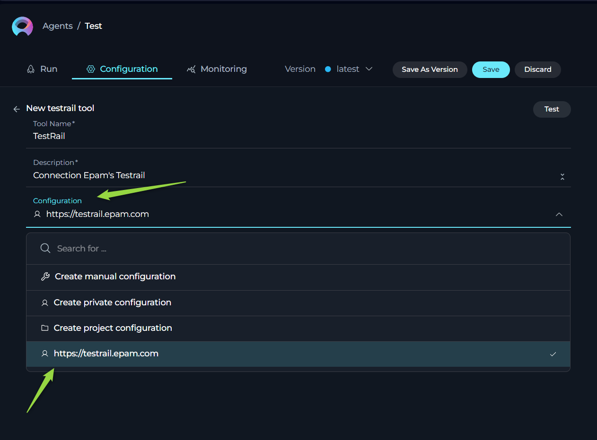
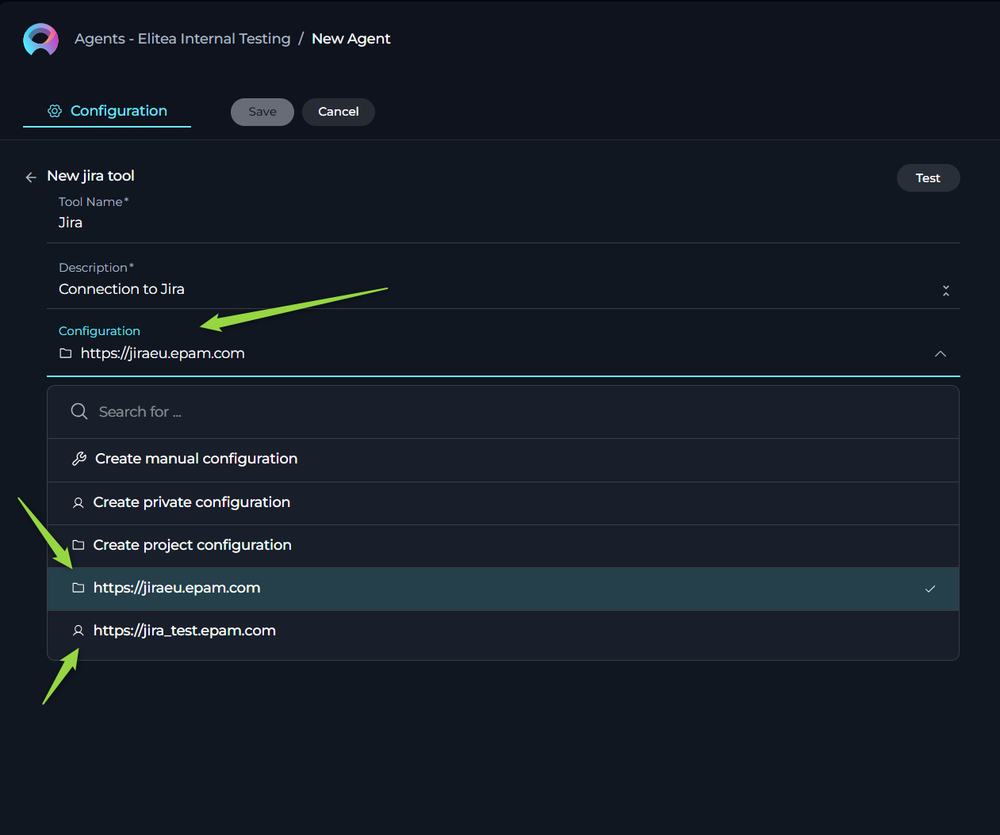
Integration Naming Convention:
The naming convention for integrations in the dropdown list also helps you identify the specific connection:
- Jira, Confluence, and TestRail Integrations: These integrations are listed using their configured URL. This ensures you can easily differentiate between connections to different instances of these tools (e.g., different Jira servers or Confluence spaces).
- GitHub Integrations: Since only one GitHub integration is allowed per workspace or project, these integrations are simply listed as GitHub.
Toolkit-Specific Integration Filtering:
The Configuration dropdown list is context-aware. When configuring a specific type of toolkit (e.g., a Jira toolkit), only integrations of that specific type (Jira integrations) will be displayed for selection. This prevents you from accidentally selecting an integration intended for a different tool.
By understanding these visual cues and naming conventions, you can easily select the appropriate pre-configured integration for your Agent toolkit, simplifying the setup process and ensuring consistent authentication.
Best Practices and Use Cases
Here are some examples of how to effectively utilize Integrations and Configurations in your ELITEA workflows:
Use Case 1: Individual Jira Credentials for User Story Management
- Scenario: You are building an agent workflow to create and publish user stories in Jira. You want each Business Analyst (BA) using the agent to authenticate with their own Jira credentials to ensure traceability of who created which user story.
- Solution:
- Instruct each BA to configure their personal Jira integration in their Private workspace's Integrations page.
- In the project where the agent is being configured, when setting up the Jira toolkit for publishing user stories, select already created Private configuration option. This will allow each BA running the agent to use their own private Jira integration, using their personal credentials for authentication.
Use Case 2: Service Account for GitHub Code Access
- Scenario: You are creating an agent workflow to read code from a GitHub repository to generate automation test cases. You have a dedicated service account for accessing the GitHub repository and want to use these credentials consistently for this purpose.
- Solution:
- The team manager or a designated member configures a GitHub integration in the Team project Integrations page using the service account's credentials.
- When configuring the GitHub toolkit in the agent for reading code, select already created Project configuration option and choose the integration configured with the service account.
Use Case 3: Mixed Authentication for Confluence and TestRail Workflow
- Scenario: You are building an agent workflow to read information from Confluence pages and then publish manual test cases in TestRail. You want to use a service account for accessing Confluence but require each Quality Assurance (QA) engineer to use their own TestRail credentials for publishing test cases.
- Solution:
- The team manager configures a Confluence integration in the Team project Integrations page using the service account's credentials.
- Instruct each QA engineer to configure their personal TestRail integration in their Private workspace's Integrations page.
- When configuring the agent:
- For the Confluence toolkit, use already created Project configuration and choose the service account integration.
- For the TestRail toolkit, use already created Private configuration option, allowing each QA to use their own TestRail integration.
By strategically using Integrations and Configurations, you can create flexible and secure agent workflows that cater to various authentication needs and enhance collaboration within your ELITEA environment.